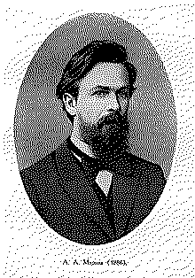

| годы жизни | 1856–1922 |
| страна | Россия · Санкт-Петербург |
| область | теория вероятностей · анализ |
| главное | цепи Маркова · закон больших чисел для зависимых величин |
| характер | резкий полемист, «Андрей Неистовый» |
Он доказал, что случайность с памятью в один шаг тоже подчиняется закону.
и проверил это, считая гласные в «Евгении Онегине».
К началу XX века закон больших чисел знали для независимых испытаний: брось монету много раз — доля орлов сойдётся к половине. Марков задал неудобный вопрос: а если испытания цепляются друг за друга, если следующее зависит от нынешнего? Павел Некрасов уверял, что тогда закон рушится, а за независимостью стоит чуть ли не свобода воли. Марков опроверг это — сухо и до конца.
Он ввёл цепь: череду состояний, где будущее зависит только от настоящего, а каким путём в него пришли — уже неважно1. Память длиной в один шаг. Для таких цепей Марков доказал свой закон больших чисел: зависимость не отменяет сходимости, лишь бы связь не была слишком цепкой.
«Независимость величин — не необходимое условие закона больших чисел.» — суть работы Маркова, 1906
Чтобы показать, что цепи не абстракция, Марков взял «Евгения Онегина»2. Выписал двадцать тысяч букв подряд и посчитал чередование гласных и согласных: за гласной чаще идёт согласная. Пушкинский текст оказался цепью — первый в истории статистический разбор естественного языка.
Сегодня на цепях Маркова стоит половина прикладной вероятности: языковые модели, ранжирование страниц, оценка переходов, вся линия «дожить до следующего раунда». Поглощающее состояние, из которого нет выхода, — тоже его конструкция.